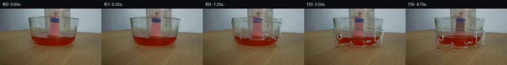

![首帧]()

Round 00
2026-11-05T12:29:00.534340+00:00像素候选变化代码 +257/−0inspection 更新
pixels 0d895e22f33338f7 · code 14ad087a30b18798
查看本轮 generate.py 真实 diff
--- previous/generate.py +++ current/generate.py @@ -0,0 +1,257 @@ +#!/usr/bin/env python3 +"""Generate a numeric, source-preserving 20-frame continuation.""" + +from pathlib import Path +import hashlib + +import cv2 +import numpy as np +from PIL import Image, ImageDraw, ImageFont + +import artifact_io + + +ROOT = Path(__file__).resolve().parent +W, H = 256, 144 + + +def smoothstep(x): + x = np.clip(x, 0.0, 1.0) + return x * x * (3.0 - 2.0 * x) + + +def alpha_composite(dst, src, alpha): + """Composite float/uint8 RGB src over uint8 RGB dst with scalar/image alpha.""" + a = np.asarray(alpha, dtype=np.float32) + if a.ndim == 2: + a = a[..., None] + out = dst.astype(np.float32) * (1.0 - a) + src.astype(np.float32) * a + return np.clip(np.rint(out), 0, 255).astype(np.uint8) + + +def shifted(arr, dy, interpolation=cv2.INTER_LINEAR): + mat = np.float32([[1, 0, 0], [0, 1, float(dy)]]) + return cv2.warpAffine(arr, mat, (W, H), flags=interpolation, + borderMode=cv2.BORDER_CONSTANT, borderValue=0) + + +def draw_analytic_glass(frame, dy, opacity=1.0): + """Muted antialiased glass contours and highlights, aligned to source evidence.""" + overlay = frame.copy() + # Upscale coordinates for clean antialiasing and downsample the RGBA layer. + scale = 3 + layer = np.zeros((H * scale, W * scale, 4), np.uint8) + pil_layer = Image.fromarray(layer) + d = ImageDraw.Draw(pil_layer, "RGBA") + + def pts(seq): + return [(int(x * scale), int((y + dy) * scale)) for x, y in seq] + + # The jar is inverted: rounded closed shoulder above, open double rim below. + left = [(87, 21), (81, 22), (77, 27), (75, 34), (76, 51), (80, 58)] + right = [(179, 21), (187, 23), (192, 29), (194, 36), (193, 53), (190, 59)] + pale = (188, 190, 184, int(72 * opacity)) + shade = (72, 78, 78, int(66 * opacity)) + d.line(pts(left), fill=pale, width=1 * scale, joint="curve") + d.line(pts(right), fill=shade, width=1 * scale, joint="curve") + d.arc((80 * scale, int((17 + dy) * scale), 187 * scale, int((28 + dy) * scale)), + 182, 358, fill=(191, 194, 190, int(56 * opacity)), width=scale) + d.arc((79 * scale, int((55 + dy) * scale), 192 * scale, int((68 + dy) * scale)), + 0, 180, fill=(195, 196, 188, int(82 * opacity)), width=scale) + d.arc((79 * scale, int((57 + dy) * scale), 192 * scale, int((70 + dy) * scale)), + 0, 180, fill=(65, 70, 68, int(72 * opacity)), width=scale) + d.line(pts([(84, 30), (83, 52)]), fill=(216, 214, 201, int(39 * opacity)), width=scale) + d.line(pts([(187, 33), (187, 51)]), fill=(211, 213, 207, int(31 * opacity)), width=scale) + + rgba = np.asarray(pil_layer, dtype=np.uint8) + rgba = cv2.resize(rgba, (W, H), interpolation=cv2.INTER_AREA) + return alpha_composite(overlay, rgba[..., :3], rgba[..., 3].astype(np.float32) / 255.0) + + +def add_smoke(frame, amount, phase): + if amount <= 0: + return frame + smoke = np.zeros((H, W), np.float32) + # Two deterministic wisps confined inside the settled jar. + for strand, x0 in enumerate((134.0, 141.0)): + points = [] + for k in range(27): + y = 70.0 - k * 1.08 + x = x0 + 2.6 * np.sin(k * 0.43 + phase + strand * 1.7) + x += 0.055 * k * (-1 if strand else 1) + points.append((int(round(x)), int(round(y)))) + cv2.polylines(smoke, [np.array(points, np.int32)], False, + color=float(0.58 * amount), thickness=1, lineType=cv2.LINE_AA) + smoke = cv2.GaussianBlur(smoke, (0, 0), 1.25) + # Soft gray-brown smoke, constrained away from the liquid. + yy, xx = np.mgrid[0:H, 0:W] … diff truncated; 170 more lines …